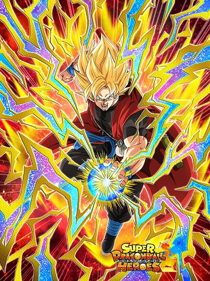
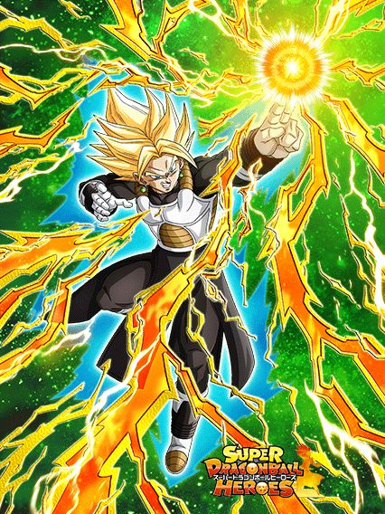

Celebração do Dragon Ball Heroes
Em termos técnicos, a última celebração do Dragon Ball Heroes.
O Super Dragon Ball Heroes foi encerrado e descontinuado esse ano, assim dando fim as collabs com o Dokkan
EZAs ainda acontecerão no futuro, mas não haverão mais personagens novos.
^
Sumário (clique para ir a qualquer um dos tópicos)
- Goku SSJB Universal
- Fu Criança AGL
- Aeos INT
- "Guerreiro vestido de preto"
- Dark King Demigra
- EZA do Trunks SSJG
- EZA da Pan Xeno INT
- EZAs do Goku Xeno e Vegeta Xeno
- "ezas" do gotenks ssj3 e gohanks ssj3
- EZA DO MECHIKABURA
- EZA DA TOWA F2P
- Vidro F2P
Goku SSJB Universal
")
Esse cara builda 200% de DEF atacando 5 vezes e a intro dele dá +200% de DEF, o que é bom, mas só por 4 turnos 💀
Caso tenha um aliado Xeno ou 3 aliados Crossover no time, ele lança um adicional de 70% de chance de ser SA e muda orbs aleatoriamente pra STR
Pegando 5 orbs ele tem Defesa Ativa e 40% de redução de dano, e caso ele pegue 7 orbs, ele fica com 300% de ATK pro resto da partida
E ele tem a Active linda que dá dano
Em geral, o Goku é um bom card, mas que pode facilmente morrer se não conseguir os orbs
Por sinal, graças a ele, agora personagens do Heroes tem voz no Global, o que é realmente muito bom.
Fu com um nome estupidamente longo
 (Dogidogi Fully Absorbed)")
Pq ele não tem uma Leader Skill 200%? 💀
Esse cara lança 1 adicional com 50% de chance de ser SA sempre, e mais outro com 70% de chance se tiver um aliado Extreme Class
Cada Super dá 20% de redução de dano no turno, e também stacka 50% de ATK, então ele tem bom dano e defesa
A habilidade mais estranha dele é ter 50% de chance de mudar todos os orbs pra AGL ou TEQ à partir do turno 5.. tipo.. que???
Aeos INT
A grande mecânica da Aeos é ganhar MUITA defesa na hora que ela recebe um golpe, similar ao Trio SSJ da WWC
Juntamente com isso, ela tem 50% de chance de desvio que aumenta de 10% em 10% a cada desvio no turno, podendo chegar a desvio garantido em todo turno se vc der sorte
E ela ainda dá 64% de ATK e DEF pra Crossover, o que é bem forte
O triste é saber que provavelmente nunca teremos um card dela transformada 💀
"Cara que certamente não é o Bardock"
 (Dark Dragon Ball Boost)")
Fãs de Dragon Ball não sabem ler, e os devs não sabem escrever.
A passiva desse cara foi escrita de um jeito tão ridículo que fez ele parecer horrível, mas ele é usável pelo menos
Em resumo, enquanto o inimigo estiver acima de 40% de HP, ele tem 70% de redução de dano antes de atacar
Quando o inimigo estiver abaixo de 40%, esse cara não tem redução mas tem mais dano e 90% de chance de crítico
É fácil de entender assim.
Dark King Demigra
")
Cuidado com a propaganda enganosa.
Esse cara quer ficar no slot 1 pra ter mais ATK e DEF e ter 80% de redução de dano.. mas a defesa dele é horrível.
Fora do slot 1 ele tem menos stats e só 60% de redução, mas pelo menos ele dá 60% de ATK pra Extreme Class e tanka decentemente pós super
O EZA do Trunks SSJG
Para nossa tristeza, ele é um card que dá dano.
O Trunks teve um buff muito interessante, já que a restrição dele de Dragon Ball Heroes agora também envolve Time Travelers, o que já ajuda um pouco
Infelizmente, ao invés de focarem na defesa, deram pra ele 2 adicionais com 50% de chance de serem SAs, o que não é o suficiente pra ele tankar grandes Supers.
O EZA da Pan Xeno INT
Uma suporte muito útil.
70% de chance de crítico e desvio, suporte de 60% de ATK e DEF e 30% de chance de crítico pra Dragon Ball Heroes..
Com o desvio buffado e ganhando 70% de DEF por desvio feito no turno, a Pan consegue desviar de forma competente, consegue tankar ataques básicos se necessário, e ainda ajuda muito o time
Belo EZA.
Os EZAs do Goku Xeno e Vegeta Xeno

Eles.. não são suficientes.
O Goku agora lança um SA adicional e tem 50% de redução de dano, enquanto o Vegeta também lança o adicional mas tem defesa ativa.. por 1 turno
Eles stackam 50% de ATK e DEF no SA e são suporte pra suas respectivas famílias, o que é bom.. mas eles não tem nenhuma outra mecânica defensiva, só defesa bruta 💀
os "ezas" do gohanks ssj3 e gotenks ssj3
")
Ambos são fusões que contém parentes do Raditz.
Esses caras tem a exata mesma passiva, e ela é horrível 💀
Eles buildam lançando SAs e lançam até 2 Supers adicionais garantidos em certas condições
Só que eles literalmente só tem stats brutos e não stackam nada, o que torna ambos horríveis.
O EZA do Vegeks STR

Esse cara é bem similar ao eza do goku black int do ano passado, stackando 50% de DEF no SA mas tendo adicionais com muitas condições
Um adicional com 50% de chance de ser SA se tiver um aliado Crossover ou Super Saiyans, e um SA adicional e crítico garantido se inimigo tiver algum debuff
Dá até pra brincar com o stack, mas em geral, nah.
O EZA DO MECHIKABURA
Deram pre ele exatamente oq ele precisava, que era mudar orbs aleatoriamente pra rainbow
Todos os buffs de orb que ele ganhava foram aumentados, e agora ele também ganha 10% de redução de dano por rainbow orb pega
E se ele pegar pelo menos 2 orbs rainbow, ele lança um SA adicional, que agora stacka 50% de ATK ao invés de 30%
Simplesmente o irrestrito Mechikagoat.
O EZA DA TOWA F2P
Pq o card F2P é melhor que mais da metade dos EZAs?
A Towa simplesmente começa com 50% de chance de desvio que aumenta pra 65% depois de desviar 3 vezes
Além do desvio, ela dá muito suporte caso tenham aliados Extreme Class no time, e tem uma defesa extremamente competente, o que a torna uma das melhores F2Ps
Vidro INT F2P

O Dokkan não percebeu que ela tem nome.
A Vidro é uma personagem bem interessante e útil, já que ela é uma suporte que se beneficia caso NÃO tenha nenhum outro aliado Crossover
Caso tenha um Yamcha no time, ela dá 86% de ATK e DEF pra ela mesma e pra ele, o que é fofo
Apesar disso, o único time onde você poderia usar os dois seria Tournament Participants 💀
Você chegou ao fim dessa página!
Obrigado por ler tudo, e fica a vontade pra ver outras